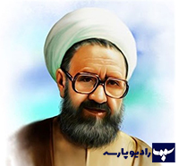

آخرین لحظات حیات سید الشهداء به روایت شهید مطهری
گوینده : آیت الله مطهری
دکتر مرتضی مطهری در آثار خود، آخرین لحظات حیات سیدالشهدا امام حسین (ع) را با احساسی عمیق و بیانی گویای معنوی روایت میکند. او بر شجاعت و فداکاری امام تأکید داشت و از آن بهعنوان نماد مقاومت در مقابل ظلم یاد کرد. در آن لحظات، امام حسین با قلبی آکنده از عشق به خدا و آزادگی، در حالی که یاران وفادارش را از دست داده بود، ایستاد و به مبارزه با ناعدالتی ادامه داد. سخنان و رفتار امام در این لحظات، نشاندهنده اوج بندگی و تسلیم در برابر مشیت الهی و پیام انسانیاش برای تاریخ بود. ایشان تا آخرین لحظه بر اصول خود پایبند ماند و با شهادتش، حیات جاودانهای به ارزشهای اخلاقی و انسانی بخشید.